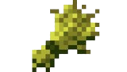
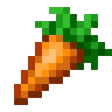
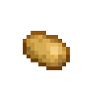
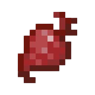
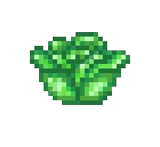
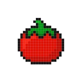
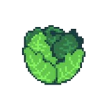

Les plantes sont les ressources principales du jeu. Chaque plante a des attributs spécifiques. Ils sont définis par le temps de pousse, les besoins en nutriments, l'apport nutritif et le prix de vente
Les graines communes
Le blé
Les graines de blé prennent 1 minute pour pousser, et donnent entre 1 et 4 blé lors de la récolte. Nous sommes également garantis de récupérer entre 2 et 4 graines de blé.

Du blé
Les carottes
Les carottes prennent 5 minutes pour pousser, et donnent entre 1 et 4 carottes lors de la récolte. Nous sommes également garantis de récupérer entre 2 et 3 graines de carottes.

Une carotte
Les pommes de terres
Les pommes de terres prennent 20 minutes pour pousser, et donnent entre 2 et 3 pommes de terres lors de la récolte. Nous sommes également garantis de récupérer 2 graines de pommes de terres.

Une patate
Les aubergines
Les aubergines prennent 2 heures pour pousser, et donnent entre 1 et 2 aubergines lors de la récolte. Nous sommes également garantis de récupérer 2 graines d'aubergines.
Une aubergine
Les graines rares
Les betteraves
Les graines de betteraves prennent 45 minutes pour pousser, et donnent entre 1 et 4 betteraves lors de la récolte. Nous sommes également garantis de récupérer entre 2 et 3 graines de betteraves.

Une betterave
Le maïs
Le maïs prend 5 heures pour pousser, et donne entre 10 et 20 maïs lors de la récolte. Nous sommes également garantis de récupérer entre 0 et 10 graines de maïs.
Du maïs
La salade
La salade prend 12 heures pour pousser, et donne entre 1 et 2 salades lors de la récolte. Nous sommes également garantis de récupérer 2 graines de salades.

Une salade
Les graines épiques
Les tomates
Les graines de tomates prennent 1 heures pour pousser, et donnent entre 4 et 6 tomates lors de la récolte. Nous sommes également garantis de récupérer entre 2 et 3 graines de tomates.

Une tomate
Les choux
Les choux prennent 72 heures pour pousser, et donnent 1 choux lors de la récolte. Nous sommes également garantis de récupérer entre 1 graine de choux.

Un chou
Les graines légendaires
Les rutabagas
Les graines de rutabagas prennent 24 heures pour pousser, et donnent 1 rutabaga lors de la récolte. Nous sommes également garantis de récupérer 1 graine de rutabaga.